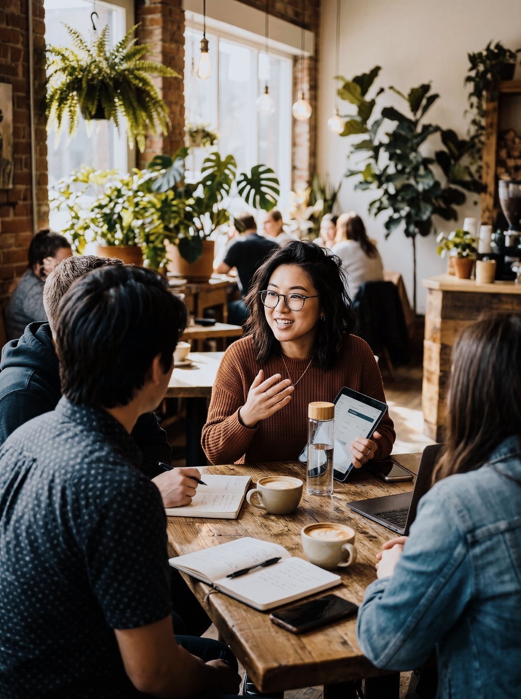

The Live
Bakery.
A bakery theatre where the bake happens in front of you, from shaping to the oven.
Explore bakery
The Coffee
Lab.
A working lab where you can watch coffee being brewed, tuned and poured.
Explore coffeeSignature
Creations.
See the full menu Our Events.
Tastings, workshops and gatherings.


Featured
Menu.
Behind the
Craft.
The people and process behind the counter.
Every cup starts with curiosity, then becomes a ritual.
The best pastry is patient, precise and made to be shared.

There is always time for one more considered pause.
Follow along @roastique.
Follow on Instagram